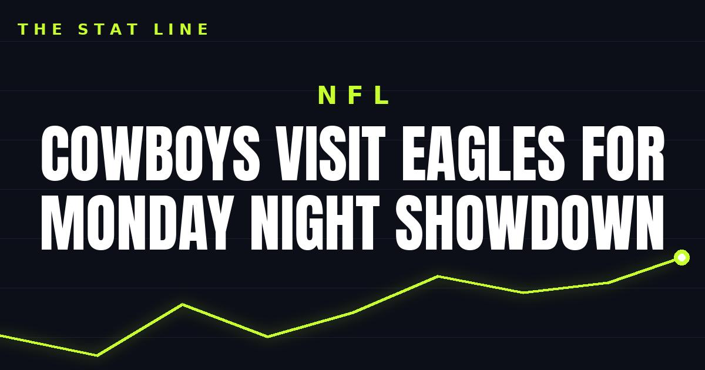

Cowboys Visit Eagles for Monday Night Showdown
The Philadelphia Eagles host the Dallas Cowboys at Lincoln Financial Field tonight at 8:15 ET on ESPN and ABC, with Philly trying to halt a four-game losing streak.

Disclosure: this post contains affiliate links. I earn a commission on qualifying purchases.
Monday night belongs to the NFC East. The Philadelphia Eagles host the Dallas Cowboys at Lincoln Financial Field on Monday at 8:15 ET, airing on ESPN and ABC.
The setup
Philadelphia enters the game trying to halt a four-game losing streak. A primetime divisional matchup at home is as good a place as any to stop the slide — but Dallas standing across the field makes it anything but a soft landing.
Matchup: Dallas Cowboys at Philadelphia Eagles
Venue: Lincoln Financial Field
Kickoff: Monday, 8:15 ET
TV: ESPN and ABC
Eagles storyline: Trying to halt a four-game losing streak
What to watch
The stakes are simple: Philadelphia needs a win to snap the skid, and doing it against Dallas under the Monday night lights would change the feel of the Eagles' season in one night. Expect the Linc to be loud — this is a rivalry game with a losing streak on the line, and that's exactly the kind of stage Monday Night Football is built for.
Watch
Source: Dallas Cowboys vs. Philadelphia Eagles: Injury News, Matchups, Players To Watch | NFL Week 7 Preview (Chat Sports). The video previews the Monday night matchup, covering injury news, key matchups, and players to watch.
Gear up: Fanatics